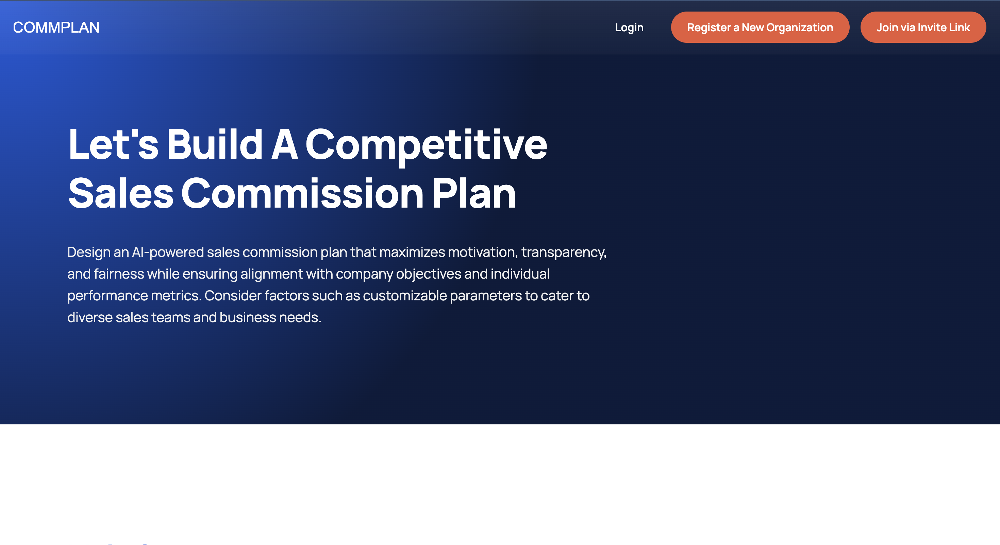
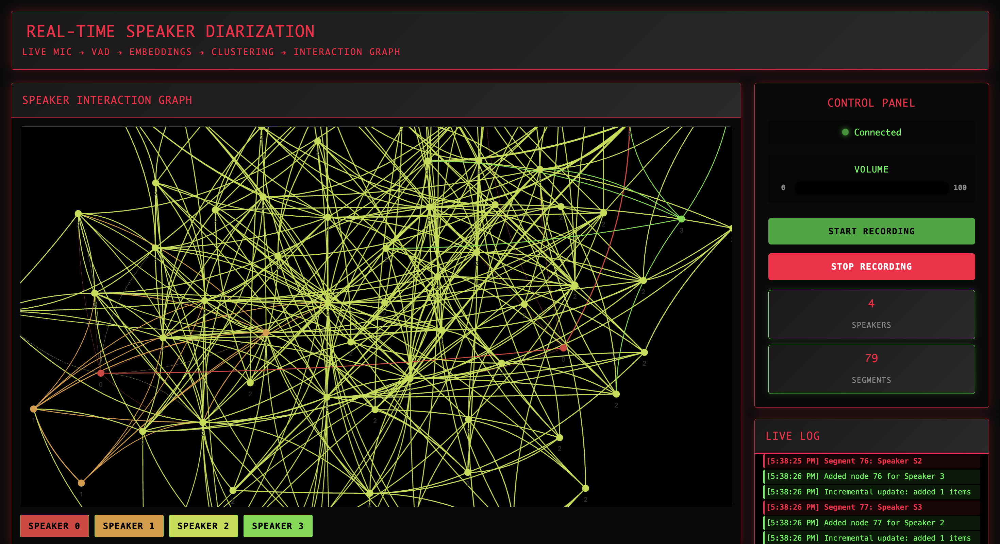

Each card pairs a visual with the stack and intent: hackathon tooling, capstone finance ops, and
audio ML research.
Hackathon / Spatial IDE

HackASU - GlassBox
A spatial IDE for coding agents that visualizes live telemetry, replay stories, and file-level
changes on an interactive code map.
- Live agent event streaming with WebSockets
- Replay timeline with touched-file context
- Safe session isolation with git worktrees
View repository
Capstone / AI + Finance Ops

ASU AI Enhanced Sales Commission
A capstone platform focused on commission workflow automation, anomaly detection support, and
transparent payout auditing.
- Rule-driven payout processing design
- AI-assisted review for edge-case anomalies
- Business-facing reporting direction
View repository
Audio ML / Real-Time Systems

Orato
A real-time speaker diarization pipeline that combines VAD, Wav2Vec2 embeddings, online clustering,
and live graph visualization.
- Multi-threaded audio and inference orchestration
- Interactive web interface and API endpoints
- GPU-aware optimization strategy
View repository